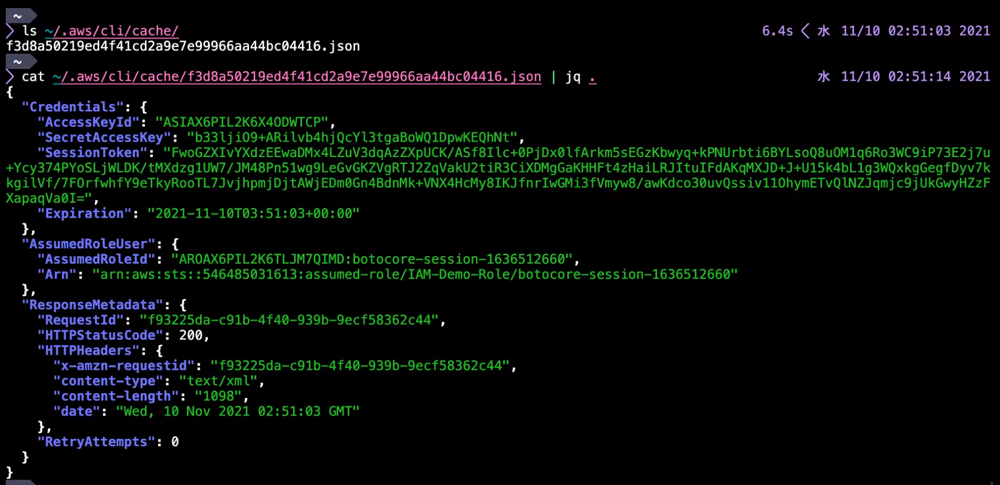
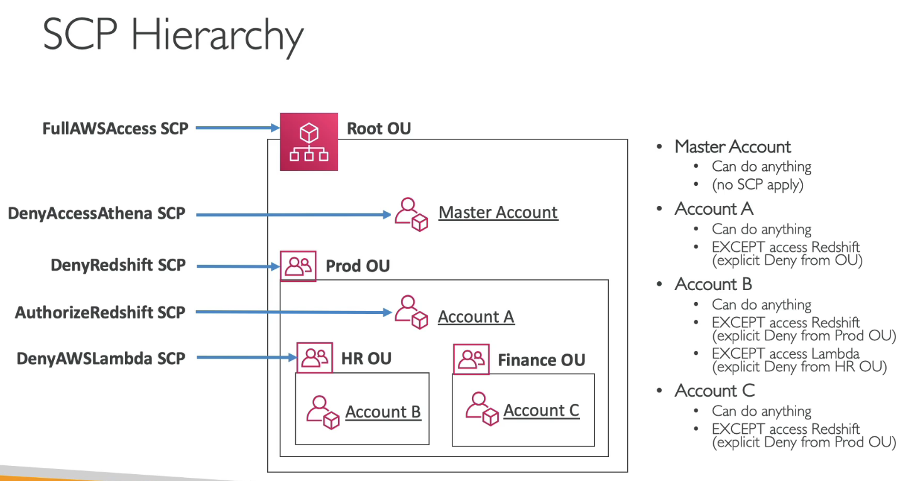

IAM: Identity and Access Management
アイデンティティ
- AWS アカウント (root ユーザ)
- IAM ユーザ
- IAM グループ
- IAM ロール
AWS アカウント
-
マルチテナンシー: 課金・リソース・セキュリティの境界
- 明示的にクロスアカウント設定しない限りリソースにアクセスできない
-
アカウント ID (数字列) とルートユーザを持つ。
-
ルートユーザでなければ出来ない操作もある
- サポートプランの変更
- S3 バケットを MFA Delete に設定
-
本番・開発環境やシステム課金の分離にアカウントを分けるケースも。
- マルチアカウント管理は Organization や SSO を活用。
- Prod/Dev 各アカウントと AD の信頼関係を結んで SSO できるようにする。
アカウントが侵害された場合の対処
https://aws.amazon.com/jp/premiumsupport/knowledge-center/potential-account-compromise/
- 全ユーザのアクセスキーの削除・ローテート(=新しいキーへの置き換え)
- 不正な IAM ユーザの削除と全ユーザのパスワード更新
- 請求書をチェックして使用されたリソースを確認
- 作成した覚えの無いリソースの削除
- ルートと全ユーザの MFA の有効化
- アカウント情報の確認
- AWS サポートから通知があれば応答
- Credential Report (認証情報レポート) でパスワードやアクセスキーの使用履歴を確認できる。
IAM ユーザー
-
ユーザー名、パス、グループ、インラインポリシーを持つ。
- パスはスラッシュ区切りで組織階層などを表す。
-
デフォルト状態では何の権限も持たない。
- 複数の管理ポリシーをアタッチできる。
- ポリシーでアクセス元の IP アドレス制限が可能。
- 管理コンソール以外の(アクセスキーによる)リクエストに IP 制限をかける例
IAM グループ
- AWS アカウントあたり 100 グループまで作成可能。
- グループ名、パス、インラインポリシーを持つ。
- 複数の管理ポリシーをアタッチできる。
- グループの持つポリシーが所属ユーザにアタッチされると考えるとよい。
- ポリシーでグループを Principal 指定しても識別されない。
プリンシパル・エンティティ
- アクセスを行う主体を表す IAM ポリシーの要素
- ユーザ、ロール以外にも Federated user や AWS サービスも指定可能。
- 可算名詞で主役、本人、正犯などの意。
ロール
-
権限をユーザやサービスに委任するために使う。
- Switch Role: ユーザへのロールの委任。クロスアカウントでの委任も可能。
-
STS が発行する一時クリデンシャルが動的に受け渡される (AssumeRole)
- 例: EC2 インスタンスへの IAM ロール付与の仕組み
- EC2 サービスが STS から取得した一時クリデンシャルをメタデータに格納し、インスタンスからそれを参照する。
- 6時間で自動的にローテーションする。(AssumeRole で DurationSeconds 6時間を指定)
サービスロール (Service role)
- ユーザに代わってサービスがリソースにアクセスすることを許可するためのロール。
- EC2 インスタンスのロールも特殊なサービスロールの一種。
Service-linked role
- サービスに直接リンクされた事前定義のロール。
-
ユーザが変更することも可能。
- Service-linked role を作成してポリシーをアタッチする権限例:
- https://docs.aws.amazon.com/IAM/latest/UserGuide/using-service-linked-roles.html#service-linked-role-permissions
-
例: Systems Manager は Service-linked role とサービスロールの両方がある
- Service-linked role は Systems Manager 全体で必要な権限が事前定義されている。
- サービスロールは Systems Manager の個別の機能を設定する際に指定する。
- https://docs.aws.amazon.com/systems-manager/latest/userguide/setup-service-role.html
IAM ポリシーと連携するサービス
- サービスごとのリソースベースポリシーやサービスロールのサポート状況のリスト。
- DynamoDB の例:
-
- DynamoDB の Serivce-liked role は DAX (VPC 内の DynamoDB キャッシュ) が VPC 内で行う操作への許可を定義。
-
https://docs.aws.amazon.com/IAM/latest/UserGuide/reference_aws-services-that-work-with-iam.html
セキュリティ認証情報 (Security Credentials)
-
ユーザー名/パスワード
- マネジメントコンソールへのログイン用
- MFA
- パスワードポリシー: 文字数、文字種、有効期限、再利用の制限、等。
-
アクセスキー
- アクセスキー ID とシークレットアクセスキー
- API アクセス用。
- ユーザ辺り2つまで。
- シークレットアクセスキーは再表示できない。
- CloudTrail ログでどのアクセスキーでコールされたか (accessKeyId) も分かる。
- 削除でなく無効化も可能。アクセスキーを削除していいか分からない場合は無効化。
-
X.509 証明書
- SOAP 形式の API リクエストで使用。
- 外部の認証局で作った証明書を登録。
アクセスキーの保護
- キーを定期的に更新する。
- キーを無効にするか削除して、アクセス権限を取り消す。
- 異なるエンティティには異なるキーを使用する。
- 使用しなくなったアクセスキーを削除する。
- アクセスキーを直接コードに埋め込まない。
- ルートユーザのアクセスキーを作らない。
MFA デバイスの回復
-
QR コードを保管してあれば再登録できる。
- 異なるタイムゾーンで MFA デバイスを設定する場合にも使用できる
-
管理者ユーザで MFA デバイスを無効化(削除)して再登録する。
- MFA デバイスは1つしか登録できない。
- MFA デバイスを移行する場合も同じ手順。
-
ルートユーザについてはメールアドレスと電話番号で回復できる。
- https://docs.aws.amazon.com/ja_jp/IAM/latest/UserGuide/id_credentials_mfa_lost-or-broken.html
- https://docs.aws.amazon.com/ja_jp/IAM/latest/UserGuide/id_credentials_mfa_disable.html
認証情報レポート (Credential Reports)
- アカウントの全て IAM ユーザの各種認証情報 (パスワード、アクセスキー、MFA など) の情報が示されたレポート (CSV) を生成。
- ユーザの作成日や最後にパスワードやアクセスキーが使われた⽇時も含まれる。
- 管理コンソールだけでなく CLI/SDK(=API) でも取得できる。
- 認証情報レポートは、4 時間に 1 回生成。
- https://docs.aws.amazon.com/ja_jp/IAM/latest/UserGuide/id_credentials_getting-report.html
API 署名
- アクセスキーで API の HTTP リクエストを署名して Authorization ヘッダで送付。
- 署名バージョン 4
- タイムスタンプ、リージョン名、サービス名などを SecretAccessKey で順次署名して署名キーを作成し、署名キーでリクエスト全体を署名。
- AccessKeyID も Authorization ヘッダに一緒に指定される。(AccessKeyID は秘密でない)
- https://docs.aws.amazon.com/ja_jp/general/latest/gr/sigv4-signed-request-examples.html
API エンドポイント
- CLI, SDK 等は各リージョンのサービス毎の API エンドポイントに HTTP リクエストを投げている
-
グローバルエンドポイント
- Route 53 等。基本的にバージニア北部 (us-east-1)
-
Ref. https://docs.aws.amazon.com/ja_jp/general/latest/gr/rande.html
認証情報ファイル
- prod のような複数のプロファイルが保存できる。
- プロファイルは SDK の設定ファイルやクライアント(bot3.client)のインスタンス化の際に指定できる。
- デフォルトのリージョンは ~/.aws/config で指定。
EC2 インスタンスで認証情報が使われる優先順位
- ハードコードで API に渡された認証情報
- 環境変数: AWS_ACCESS_KEY_ID/AWS_SECRET_ACCESS_KEY
- 認証情報ファイル (~/.aws/credentials)
- EC2 インスタンスに付与されたロールの認証情報 (メタデータ内に格納)
ポリシー
アイデンティティベース vs リソースベースのポリシー
- リソースベースポリシーをサポートするサービス例
- S3, SQS, SNS, KMS
インラインポリシー
- ユーザ、グループ、ロールのリソースベースのポリシー
- 通常は使用しない
- 権限の高いポリシーを誤ってアタッチしないようするために使うケースがある
マネージド (管理) ポリシー
- 管理ポリシーは IAM ユーザ、グループ、ロールに複数アタッチできる。
-
AWS 管理ポリシー
- 必要な権限がざっくり定義されていて便利
-
カスタマー管理ポリシー
- 細かいアクセス制御ができる
信頼ポリシー (Trust Policy)と AssumeRole
- 信頼ポリシーはロールに付属するリソースベースポリシー。ロールの信頼関係タブで表示される。
- ユーザが任意のロールに AssumeRole できたらアクセス制限にならないので信頼ポリシーで許可。
- プリンシパル (AWS サービスや IAM ユーザ) が対象ロールに sts::AssumeRole を実行して STS から一時クリデンシャルを取得できるよう許可する。
-

-
AssumeRole は STS から一時クリデンシャルを払い出す
-
- ARN が assumed-role になっている
-
一時クリデンシャルがキャッシュされる
- 
外部 ID (External ID)
- AssumeRole で補助的な ID として使用する任意の文字列。
- 信頼ポリシー側では Condition で sts:ExternalId に外部 ID を指定する。
"Principal": {"AWS": "Example Corp's AWS Account ID"},
"Condition": {"StringEquals": {"sts:ExternalId": "Unique ID Assigned by Example Corp"}}
- AssumeRole の呼び出し側はパラメータで外部 ID を渡す。
- 典型的な用途は「混乱した代理 (confused deputy)」問題の回避。複数アカウントをサポートするサービスが誤って別アカウントにアクセスしないうにする。
- https://docs.aws.amazon.com/IAM/latest/UserGuide/id_roles_create_for-user_externalid.html
- https://docs.aws.amazon.com/IAM/latest/UserGuide/confused-deputy.html
ポリシー評価ロジック

- リソースベースポリシーは IAM サービスの外らしい

- Excplicit Deny: 明示的な拒否は許可に優先。
- Implicit Deny: 明示的な許可がないとデフォルトで拒否。
- Permissions boundary と STS セッションポリシーはアイデンティティベースポリシーと AND が取られるので、両方に許可がないと Implicit Deny となる。
- リソースベースポリシーがある場合、アイデンティポリシーかどちらかに明示的許可があれば許可される
- クロスアカウントの例で相互に許可する必要があるのは特別？
- ユーザ・グループにアタッチされているポリシーに 1 つでも Explicit Deny があれば拒否。
- Switch Role している場合はユーザ・グループではなくロールのポリシーのみが評価される。
ポリシードキュメント
Ref. https://docs.aws.amazon.com/ja_jp/IAM/latest/UserGuide/reference_policies_elements.html
ステートメントブロック
- ポリシードキュメントには複数のステートメントブロックが書ける (Statement 配列)
- OR 評価されるので、ブロックの順序は関係ない。
Principal/NotPrincipal
- アイデンティティベースのポリシーでは使用できない(省略される)。リソースベースでは必須。
- NotPrincipal は Effect: Deny で使用。他の全プリンシパルが許可される Allow で使用すべきでない。
- リソースベースポリシーの Principal にアカウント ID または root を指定することで、そのアカウントで任意のプリンシパルにそのアクセス権限をポリシーで許可することを委任することを意味する。(クロスアカウント許可で必要)
"Principal": { "AWS": "123456789012" }
"Principal": { "AWS": "arn:aws:iam::123456789012:root" }
- リソースベースポリシーがあるリソースはクロスアカウントアクセスできる
NotAction
NotResouce
Condition
Ref. https://docs.aws.amazon.com/ja_jp/IAM/latest/UserGuide/reference_policies_elements_condition.html
複数条件は AND 指定、SourceIP のような配列は OR 指定。
条件キー (Condition key)
https://docs.aws.amazon.com/ja_jp/IAM/latest/UserGuide/reference_policies_condition-keys.html
VPC を特定
"StringEquals": { "aws:SourceVpc": "vpc-111bbb22" }
VPC エンドポイントを特定
"StringEquals": { "aws:SourceVpce": "vpce-1a2b3c4d" }
TLS を必須にする (S3 の転送中の暗号化をバケットポリシーで有効化)
"Bool": { "aws:SecureTransport": "false" }
ポリシー変数
Ref. https://docs.aws.amazon.com/ja_jp/IAM/latest/UserGuide/reference_policies_variables.html
管理ポリシーに ${aws:username} を埋め込んでグループにアタッチするなどの使い方。
ARN: Amazon Resource Name

- リージョン、アカウントは省略される場合も。
- 例: S3 はリソース名でグローバルで一意に識別できるため。
ポリシーシミュレーター
様々なポリシーの例
- 全バケットのリストを許可。
- NotAction: DeleteBucket 以外の操作を myBucket に許可。
- インスタンスとセキュリティグループの情報取得を許可。
- 特定セキュリ ティグループのルール追加・削除の許可、特定インスタンスの開始・停止の許可。
- S3 の PUT, GET リクエストを MFA が有効な場合に 2019/7/1~12/31 の間許可。
- 指定の DynamoDB テーブルと指定の S3 バケットに DynamoDB, S3 全 API を許可。
- NotResource により 指定の DynamoDB テーブルと指定の S3 バケット以外で DynamoDB, S3 全 API を拒否。
このポリシードキュメントだけだと2つのステートメントブロックの意味は同じだが、NotResource による明示的 Deny で、他のポリシーがアタッチされた場合にも他のテーブル・バケットへの操作を禁止できる。

- "department: dev" タグがついたインスタンスのボリュームのアタッチ・デタッチを許可。
- ボリュームのタグにユーザ名がついているボリュームのアタッチ・デタッチを許可。
- ワイルドカードにより Spot インスタンス系の API を全て拒否
- StringNotEquals で ec2:InstanceType が指定インスタンスタイプの場合以外はインスタンス起動を拒否
- StringNotEqualsIgnoreCase で ec2:Owner が amazon 以外のイメージの起動を拒否
- StringEqualsIgnoreCase で AMI-TYPE タグが Paid のインスタンスのスケジュール起動を拒否
NOTE
- ec2:RunInstances: インスタンスの作成・起動 (Launch)
- ec2:StartInstances: 停止していたインスタンスの再起動 (Start)
- ec2:RunScheduledInstances: スケジュールドリザーブドインスタンスの起動 (Launch)
- ForAnyValues:StringEquals: 対象のキーが複数の値を持ち、そのいずれかが等しい場合
- ForAllValues:StringEquals: 対象のキーが複数の値を持ち、その全てが等しい場合
リソースベースポリシーでアカウントとサービスを特定して許可する場合
References
IAM Access Analyzer (アクセスアナライザー)
- リソースベースのポリシーを分析し、外部プリンシパルと共有されるリソースを表示。
- 対象サービス: IAM ロール, S3 バケット, KMS キー, Lambda 関数/レイヤー, SQS キュー
- Ref. AWS: Security: Logging, Monitoring, Response
IAM Policy Simulator
- get-context-keys はポリシー内で使われているポリシー変数を取り出す。
- 出力例:
{
"ContextKeyNames": [
"aws:username",
"aws:CurrentTime"
]
}
- https://docs.aws.amazon.com/cli/latest/reference/iam/get-context-keys-for-custom-policy.html
- https://docs.aws.amazon.com/cli/latest/reference/iam/get-context-keys-for-principal-policy.html
Permissions Boundery
エンティティ (User/Group/Role) にアタッチできるガードレール(境界)
- ガードレールと許可ポリシーの AND が取られる。
- Permissions boundry には GetObject の許可がないので AND を取った結果は Implicit Deny となる。
Permissions boundary の典型的なユースケースはロールの作成許可の開発者への権限移譲
- ロール作成許可をフリーハンドで与えてしまうとそのユーザは AssumeRole することでどんな権限でも使えるようになってしまう問題を解決したい。
- 禁止したい権限を明示的に拒否する Permissions boundary をエンティティにアタッチしておく。
- Condition で PermissionsBoundery のついた Role 以外の Role 作成や PermissionsBoundery のアタッチなどをできないようにする。
- 禁止したい操作を拒否するのが Permissions Boundary のベストプラクティス
Q. ブラックリスト形式のアイデンティティベースポリシーでなく Permissions Boundary を使う利点は？
A. 組織全体で横断的なガードレールをかけたりしたい場合、ブラックリストの管理ポリシーをたくさん作るよりもシンプル。
References
-
re:Invent 2018: Become an IAM Policy Master in 60 Minutes or Less
- https://www.youtube.com/watch?v=YQsK4MtsELU
- 60分でポリシーマスターになろうというセッション。
-
AWSサービスの権限管理
-
KDDI 流 クラウド・セキュリティ ～「大企業のクラウド適応」 秘伝のレシピ～
-
AWSマルチアカウントにおけるIAMユーザー設計戦略を考えてみる
-
Permissions boundary の参考
MFA
- いずれのデバイスも時間同期されるワンタイムパスワード (OTP) アルゴリズムに基づいて 6 桁の数値コードを生成する。
- DUO などのアプリが仮想デバイス。
SDK/API での MFA は sts:GetSessionToken または sts:AssumeRole でデバイスの SerialNumber と 6 桁の TokenCode を渡す。(GetSessionToken は MFA 必須)
対象のロールは aws:MultiFactorAuthPresent で MFA を必須としておく。
{
"Version": "2012-10-17",
"Statement": {
"Effect": "Allow",
"Principal": {"AWS": "ACCOUNT-B-ID"},
"Action": "sts:AssumeRole",
"Condition": {"Bool": {"aws:MultiFactorAuthPresent": "true"}}
}
}
Ref.
- https://docs.aws.amazon.com/ja_jp/IAM/latest/UserGuide/id_credentials_mfa_configure-api-require.html
- https://docs.aws.amazon.com/ja_jp/IAM/latest/UserGuide/id_credentials_temp_request.htm
- https://aws.amazon.com/jp/premiumsupport/knowledge-center/authenticate-mfa-cli/
AWS STS: Security Token Service
概要
-
一時的なセキュリティ認証情報を発行する。IAM ロールや ID フェデレーションの基盤。
- アクセスキー ID, シークレットアクセスキー, セッショントークン(セキュリティトークン)
-
- セッショントークン(セキュリティトークン) 以外はアクセスキーと同じ
-
有効期間 (DurationSeconds):
- デフォルト 3600秒 (1h)
- 最小 15分、最大 12 時間
- ロールの属性 MaxSessionDuration で最大期間を 1h ~ 12h で設定できる。
-
セッショントークンは API 呼び出しの際にヘッダまたはクエリ変数の X-Amz-Security-Token で指定する。
-
リージョンエンドポイント
- STS はグローバルサービスでデフォルトは https://sts.amazonaws.com (us-east-1)
- リージョンエンドポイントを使うことでレイテンシー低減が可能。
- 取得した認証情報はグローバルに使用できる。
-
https://docs.aws.amazon.com/ja_jp/IAM/latest/UserGuide/id_credentials_temp.html
クロスアカウント認証
-
ロールの信頼ポリシー: 相手側アカウントでの AssumeRole の許可を委任する。
- Principal に相手のアカウント ID か root ユーザの ARN を指定。
-
リモートアカウント側ポリシー: ロールへの AssumeRole を許可する。

- MFA による保護
- 信頼ポリシーで「Requre MFA」をチェックすることで MFA 認証されたアカウントのみを許可するよう設定できる。
- Switch Role
- AWS コンソールで IAM ロールへの切り替えが可能。
- コンソール右上のユーザ名をクリックして出るメニューで「ロールの切り替え」
- 「ロールの切り替え」ページで相手のアカウント番号とロール名を入力する。
- リモートアカウントのロールとしてコンソールが表示される。
- https://docs.aws.amazon.com/ja_jp/IAM/latest/UserGuide/id_roles_use_switch-role-console.html
Ref. Security Engineering on AWS: Lab1 クロスアカウント認証
- ロールの信頼ポリシーで別アカウントからの AssumeRole を許可。
- EC2 インスタンスにアタッチするロールのポリシーでリモートロールへの AssumeRole を許可。
- EC2 インスタンスから aws sts assume-role コマンドを実施。
- 取得した一時クリデンシャルを環境変数に設定。
- AWS_ACCESS_KEY_ID
- AWS_SECRET_ACCESS_KEY
- AWS_SESSION_TOKEN
SSE-KMS 暗号化された CloudTrail ログの復号を許可する例:
- 同一アカウントではキーポリシーで対象ユーザを ARN で許可する。
- クロスアカウントではキーポリシーで相手アカウントの root の ARN に Decrypt の許可を委譲、さらに相手アカウント側でユーザに Decrypt を許可する。
KMS キーポリシー
{
"Sid": "Enable encrypted CloudTrail log read access",
"Effect": "Allow",
"Principal": {
"AWS": [
"arn:aws:iam::222222222222:root"
]
},
"Action": "kms:Decrypt",
"Resource": "*",
"Condition": {
"Null": {
"kms:EncryptionContext:aws:cloudtrail:arn": "false"
}
}
}
リモートアカウントの IAM ユーザーポリシー
{
"Version": "2012-10-17",
"Statement": [
{
"Effect": "Allow",
"Action": "kms:Decrypt",
"Resource": "arn:aws:kms:us-west-2:111111111111:key/keyA"
}
]
}
AWS Organization
概要
- 複数アカウントを階層的なポリシーで管理。
- 一括請求と SCP (Service Control Policy) によるアクセス許可ガードレール。
- 追加料金なしで利用できる。
一括請求 (Consolidated Billing)
-
ボリューム価格
- EC2, S3 等は使用するほど低価格となるボリューム価格が提供されている。
- 請求を統合することによってコストを削減できる。
-
他のアカウントによって購入されたリザーブドインスタンスも利用できる。
- Organization の導入方法として「一括請求」のみと「すべての機能」がある。
OU (Organization Unit)
- マスターアカウント: Organization を作成したアカウント。管理アカウントとなる。
- メンバーアカウント: 所属アカウント。
-
組織構造に合わせて論理単位である OU を構成する。
- 上位 OU から SCP のポリシーが継承される。
- 5階層までネスト可能。
-
OU にメンバーアカウントを所属させる。(Root OU に直接含めることもできる)
SCP (Service Control Policy)
- アカウントのユーザやロールにアクセス許可ガードレールを適用する。
- メンバーアカウントのルートユーザの権限を制限できる点が特に重要。
- 組織全体(=Root OU), 各 OU, 各アカウント単位でアタッチできる。

- デフォルトでは FullAWSAccess という AWS 管理ポリシーが全 OU, アカウントにアタッチされる。
- サービスロールには適用されない。
SCP の例
- OU に S3_Only の SCP を指定、その配下の Admin 権限を持つユーザも S3 しかアクセスできなくなる。root ユーザも同様。

SCP は OU 階層に従って継承される

- SCP 間の Allow の AND がとられるので、全ての SCP で Allow となる Action しか許可されなくなる。

評価プロセス

詳細

- メンバーアカウントのユーザから自身に適用された SCP が見られるかは SCP で許可されたパーミッション次第。
Organization のサービス統合
クロスアカウントを個別設定しなくても一括設定できる。
CloudTrail の組織証跡
- 全アカウントで CloudTrail ログを有効化し、アカウントで証跡が変更されるのを防ぐことができる。
AWS Config アグリゲータとの統合
- 個々のアカウントを設定せずに AWS Config のデータを組織で一元集約できる。
Firewall Manager との統合
- リソースの AWS WAF ルールを組織内で一元管理できる。
CloudWatch Event Bus
- 個々のアカウント ID を指定する代わりに Organization の全アカウントからの送信を一括許可できる。
AWS SSO
- Organizations と ネイティブ統合され、所属する全アカウントが一覧表示される。
AWS Security Hub
- 組織アカウント横断で検出結果を統合。
AWS Control Tower
AWS Control Tower
マルチアカウント管理の問題を解決する Landing Zone を適用するサービス。
アカウントの各種設定、監査ログ集約、ガードレールなどのデプロイを自動化。
SCP (予防的ガードレール) と Config Rules (発見的ガードレール)。
Ref. AWS: Security: CloudFormation, Service Catalog, Control Tower